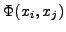
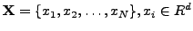
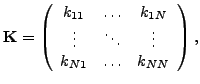
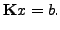
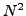
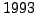
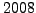
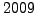
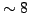
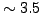

Algorithms based on kernel methods play a central role in statistical machine learning. At their core are a number of linear algebra operations on matrices of kernel functions which take as arguments the training and testing data. A kernel function  generalizes the notion of the similarity between a test and training point. Given a set of data points, , the kernel matrix is given by,
|  | (1) |
|  | (2) |
When the underlying system is ill-conditioned, there is a degradation of the performance of iterative approaches, necessitating the use of a preconditioner for the Krylov iterations. Popular preconditioners like Jacobi, SSOR, ILU can be used to improve the convergence, however, these preconditioners have an O() space and computation requirement for dense matrices, which would ruin any advantage gained by the fast matrix-vector products. The preconditioner must have a representation that allows for a fast matrix-vector product just like the kernel matrix. We propose a Tikhonov regularized kernel matrix solved with a truncated conjugate gradient algorithm as a preconditioner for the kernel matrix, which can be accelerated using the aforementioned approaches. Because the symmetry of this preconditioner cannot be guaranteed, we use a flexible GMRES (Saad, ) algorithm.
A good preconditioner will improve the convergence of the iterative approach at the expense of an increased cost per iteration. The convergence with proposed preconditioner is shown to be an order of magnitude better than the unpreconditioned approach. But, for a preconditioner to be useful, the total time taken by the preconditioned approach should be less than the unpreconditioned approach. This is achieved by using the the fast matrix-vector product algorithms, resulting in a computationally efficient solver with faster convergence. We use two classes of fast matrix vector products, approximation-based acceleration (eg. FIGTREE (Morariu et al., ) for Gaussian kernel) and GPU-based parallelization (Srinivasan et al, ). Each of these two approaches have their own advantages and disadvantages. We propose a strategy to choose the appropriate acceleration in the light of the desired accuracy.
The performance is further illustrated in popular learning approaches namely, radial basis function interpolation, Gaussian process regression and kernel classification. There is an improvement of upto X in the number of iterations to converge and X in the total time taken compared to a conjugate gradient based approach. The core preconditioning strategy proposed here will soon be released as an open source package.